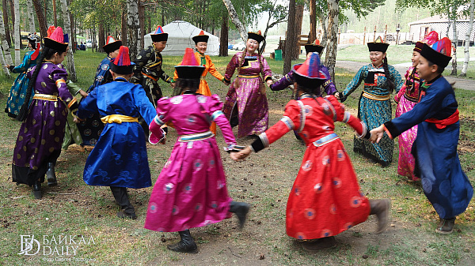
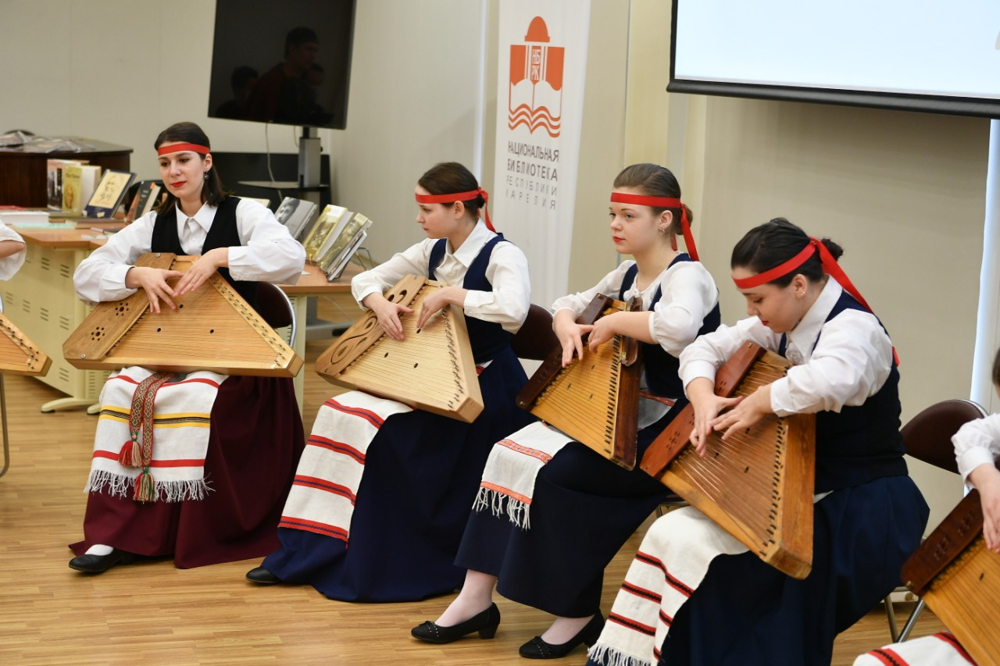
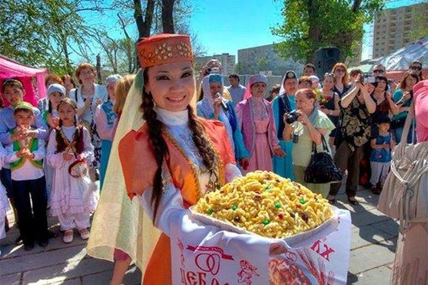
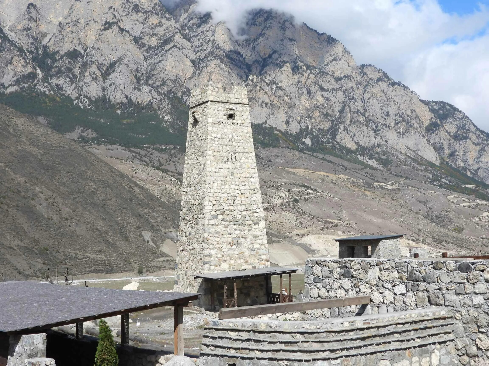

Круговой ритм
Танец подчеркивает, что музыка часто живет не отдельно, а внутри общего действия и сообщества.
Раздел 5
Музыка делает наследие слышимым. Через инструмент, песню, круговой танец или эпическое слово культура передает интонацию народа, ритм пространства и образ памяти.

Звучащая карта
Визуальные сюжеты

Танец подчеркивает, что музыка часто живет не отдельно, а внутри общего действия и сообщества.

В Поволжье музыкальная традиция тесно связана со словом, городской культурой и семейной памятью.

Кавказский танец передает достоинство, внутреннюю силу и чувство культурной меры.
Четыре наблюдения
Звук инструмента часто отражает ландшафт: степь, северное пространство, горный рельеф или арктическую тишину.
Танец и круговой ритуал показывают, что музыка помогает сообществу переживать единство.
Эпос и песня передают культурную память так же сильно, как архитектура или музейный предмет.
Сегодня музыкальное наследие звучит и на сцене, и в цифровых архивах, и в школьных проектах.